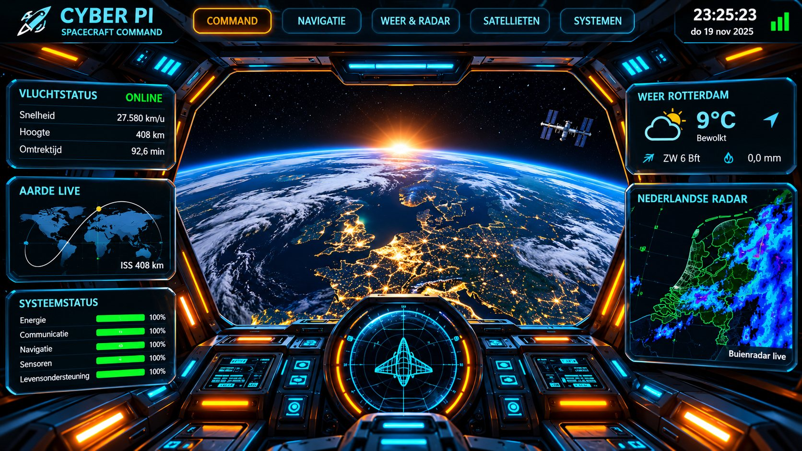

Wereldnetwerk
● OPENBARE DATA ONLINE
InternetstatusPublieke bronnen
Wereldklokken10 steden
WeerfeedsVerbinden…
GLOBAL CYBER THREAT UPDATE
THREAT INTEL● CISA threat feed laden…
CISA KEV CATALOGUS
—
actief misbruikte kwetsbaarheden
BRONUPDATE
—
CISA openbare catalogus
Hotspots zijn visueel; CISA publiceert kwetsbaarheden, geen live aanvalslocaties.
Weer wereldwijd
--°C gemiddeld
Weerdata voor de geselecteerde steden laden…
Weerdata laden…
NEDERLANDSE BUIENRADAR
Radar laden… · Data by RainViewer
--:--:--WERELD COMMANDO // ROTTERDAM
NEDERLAND
--:--
Rotterdam · Amsterdam
ENGELAND
--:--
Londen
VERENIGDE STATEN
--:--
New York · Chicago · Denver · Los Angeles
AUSTRALIË
--:--
Sydney · Melbourne · Perth · Brisbane
Wereldweer & lokale tijden
Tijden zijn live en volgen automatisch zomer- en wintertijd. Weer wordt periodiek vernieuwd via Open-Meteo. Niet elke bron is realtime.